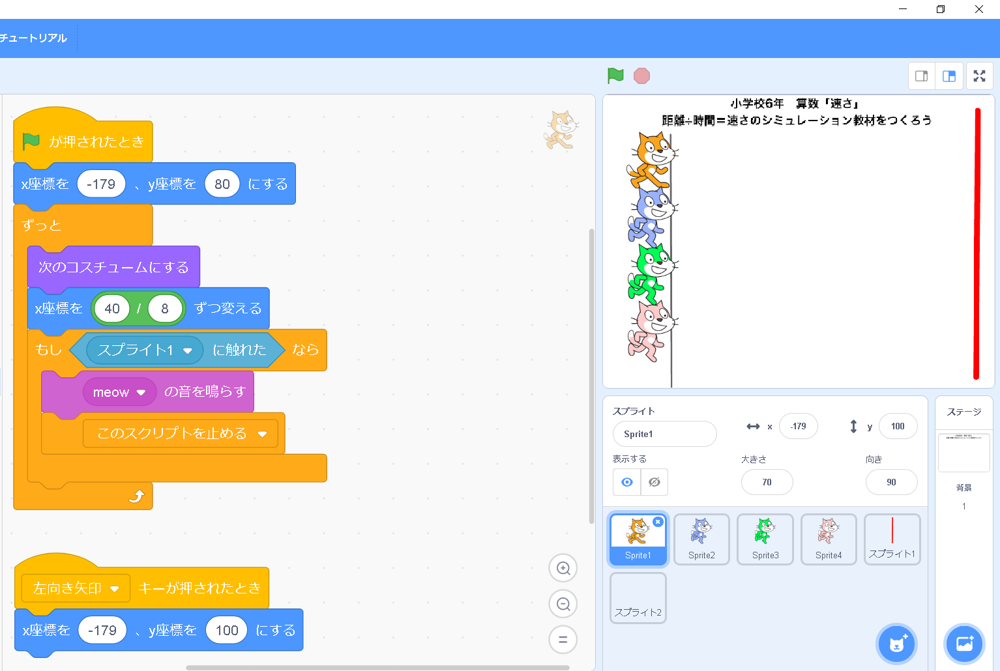
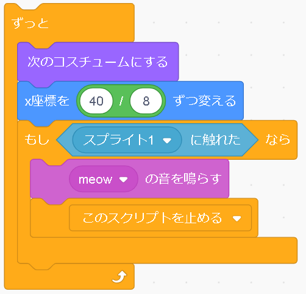

速さのシミュレーション
科目
学年
単元
解説
プログラムするスプライト
|
|
|  |
まず、最初の旗のブロックは、プログラムを始めるきっかけになるようなものです。これがないと、プログラムが実行できません。 つぎに、[ｘ座標を-179、ｙ座標を80にする]とありますが、これは事前準備です。いちについて～、よ～い、どん！の「いちについて～」に当たります。 |
 |
次のブロックが動きのプログラムになります。 まず初めに[ずっと]と書かれた繰り返しの命令がありますね。 ある命令を繰り返すようにするブロックですので、中身が重要です。 中身を見てみましょう。 まずこの[ずっと]の中にあるブロックの上から二つ目までです。[次のコスチュームにする]というのは、スプライトは、紙芝居のように何枚も用意することができるので、足を延ばした猫さんのスプライトと足を曲げた猫さんのスプライトを用意し、そのスプライトを交互に表示させることで走ってるように見えるという仕組みです。猫さんが走っているように見せるためのアニメーションの役割を果たすので、あってもなくてもいいです。 残りの[もし～]のプログラムです。ずっと繰り返していたら猫さんが一生とまらないので、到着の目安を決めています。このプログラムではその目安を＜スプライト１に触れた＞としています。スプライト１というのは、右側にある棒です。猫さんがそこに当たったら、次にどうするかというと、＜meow の音を鳴らす＞＜このスクリプトを止める＞とあります。つまり、猫さんが「にゃお」と鳴き、プログラムが止まります。 |
|  |
最後に、このプログラムが残っています。旗が押されてすぐのプログラムを見てみてください。座標が同じです。（ｙはプログラムを作成した方が間違えた可能性があります）つまり、元の位置に戻る、ということです。ゴールしちゃって元の位置に戻したいときに左のキーを押せば、”いちについて～”の位置に戻ってもらえるような仕組みです。 残りの猫さんたちは、同じプログラムを組みます。プログラムで変えるところは、速さを比較するために、[x座標を〇〇ずつ変える]の○○の部分、そして縦に整列させるために、「ｙ座標の位置（縦の位置）」を変えます。 |